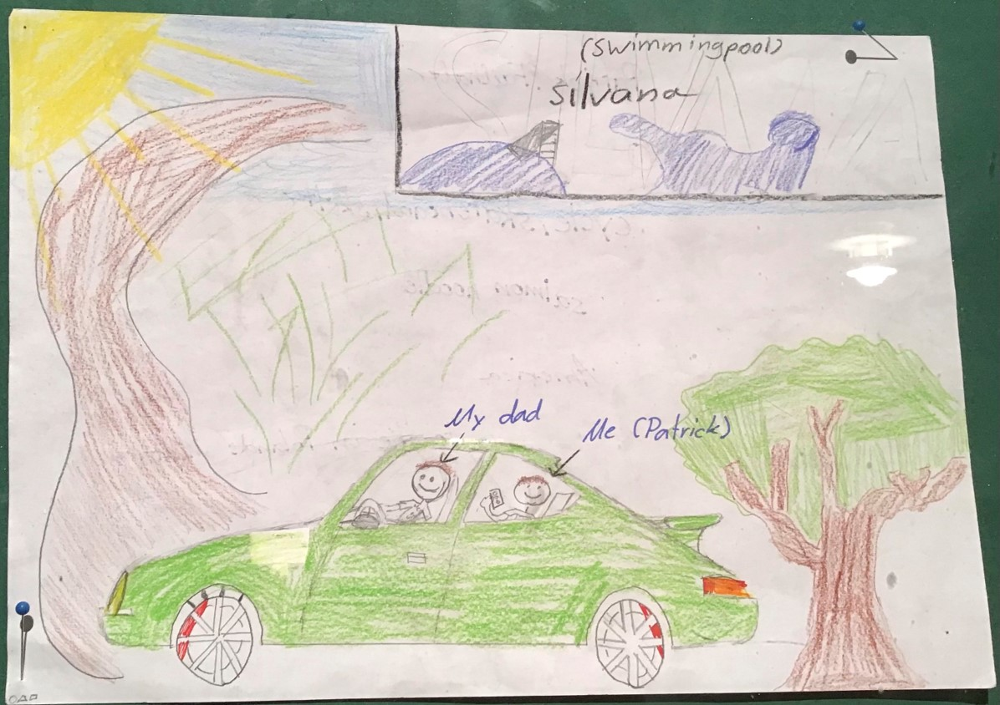
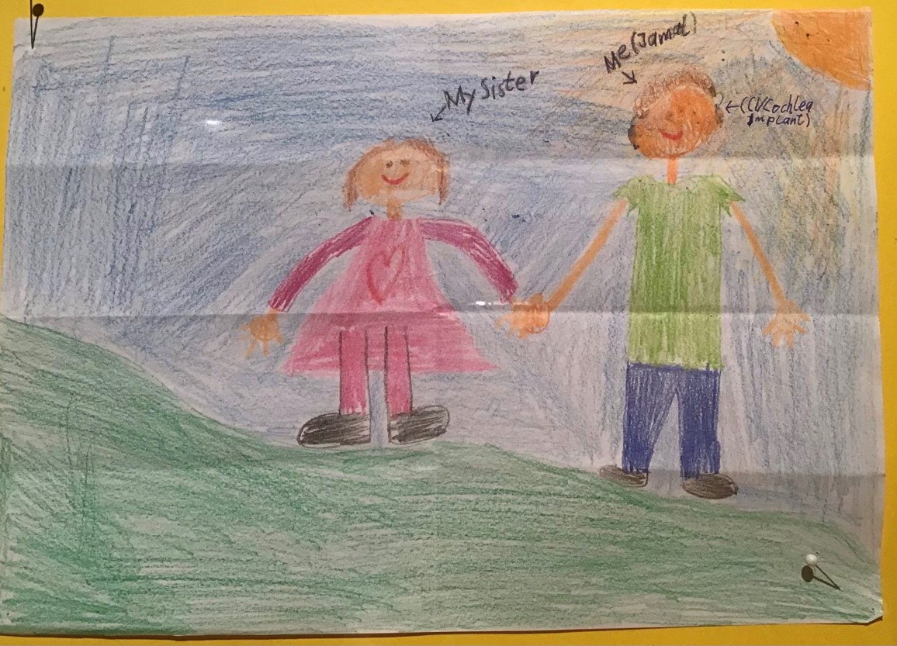
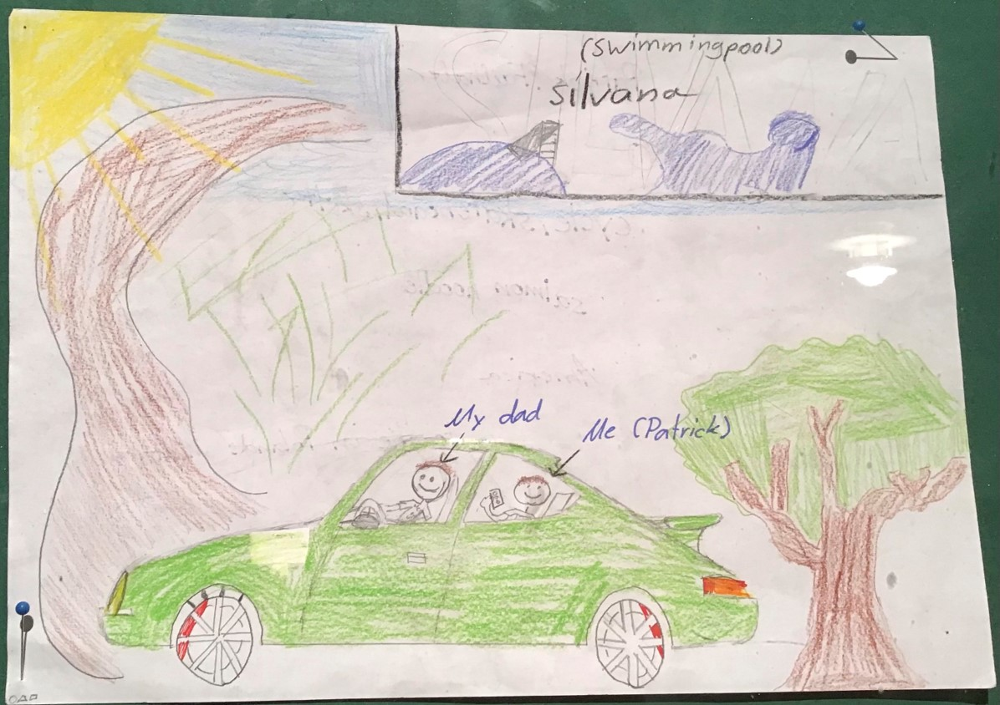
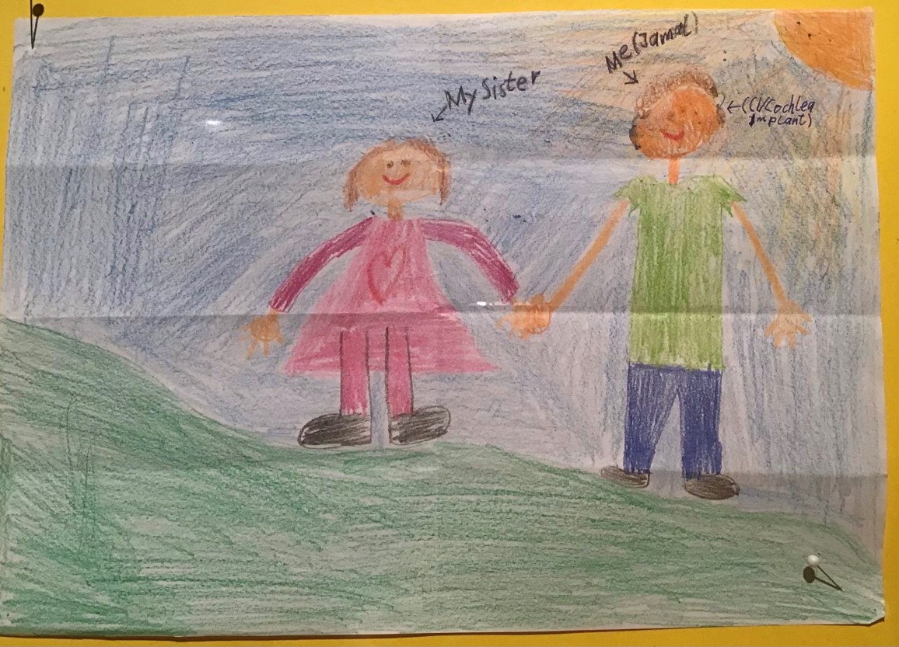
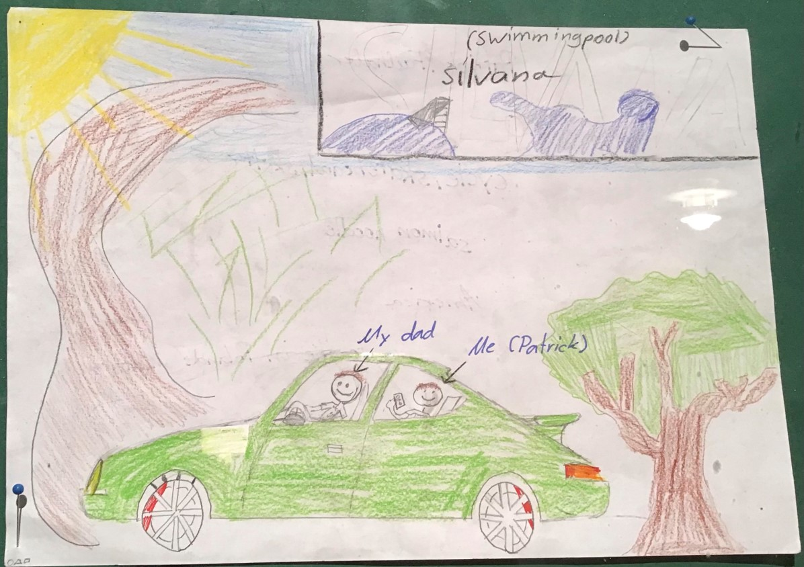
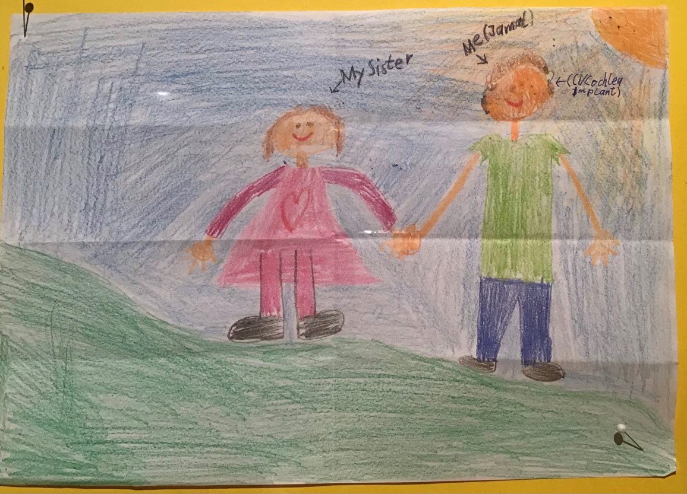
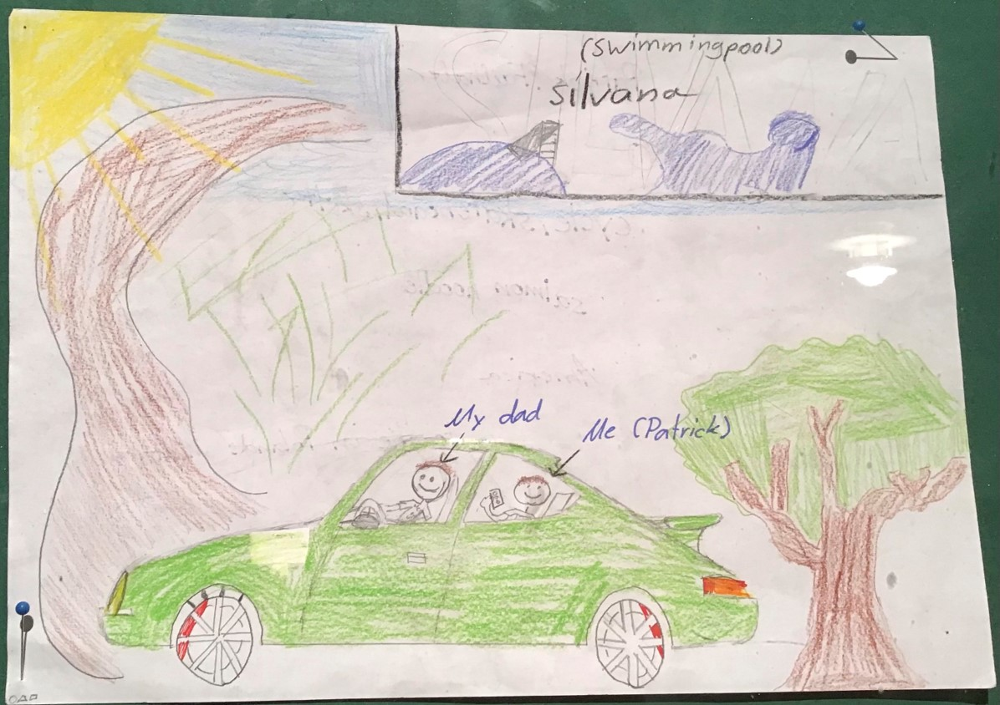
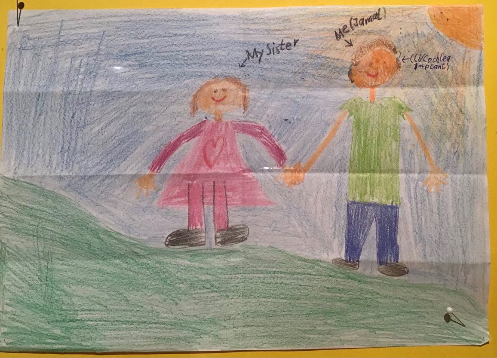

 





Sophie zeichnete ihre Freundinnen, weil sie mit ihnen glücklich ist.
Lucy zeichnete einen Strand und ein Boot mit der Aufschrift "peace & love" Die Bedeutung hinter dem Bild ist beeindruckend, da es sich auf die aktuelle weltweite Situation bezieht: Es zeigt, wie wie wichtig es ist über Frieden und Liebe nachzudenken.


Isabella zeichnete alle Lebensbereiche, die sie glücklich machen: ihre Hobbies, ihre Familie und Freunde, aber auch gute Noten.


Anabel zeichnete ihre Freundin und sich selbst in farbenfrohen Kleidern.